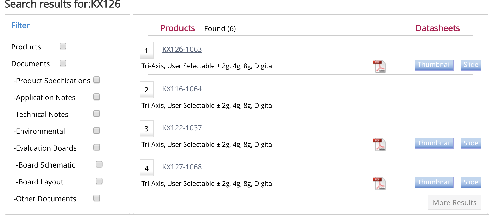
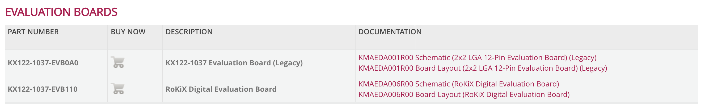

Zoltan_Csaki
Software Engineer
Ithaca NY
(607)280-0335
Skills
Computer Programming: profficient in Python and Java
Teamwork: Experienced with larger engineering projects and working with teams
Problem Solving: Enjoys challenges and thinking outside the box
Website and Database programming: Experienced with SQL and familiar with HTML
Enthusiasm: Brings energy, motivation and excitment to the work enviroment
Education
Cornell Universty College of Engineering Class of 2022
2018 - Now
Lansing High School
2014 - 2018
Experience

 Member of the Electrical and computer engineering team on Cornell Cup Robotics. We have been developing a child friendly robotics platform using Raspberry Pis and using the platform to make fun interactive and fairly complex applications. We developed a modular connections to the bot with universal connections to motors and servos. Application projects include lasertag between people and a real life/video game fusion lasertag game between robots (see project portfolio).
Member of the Electrical and computer engineering team on Cornell Cup Robotics. We have been developing a child friendly robotics platform using Raspberry Pis and using the platform to make fun interactive and fairly complex applications. We developed a modular connections to the bot with universal connections to motors and servos. Application projects include lasertag between people and a real life/video game fusion lasertag game between robots (see project portfolio).
 Team lead Junior year managing a team of 15 people and head programmer both junior and senior year. Qualified for state competition in both 2017 and 2018. I was in charge of software programmed in java, and I also worked with sensor and mechanical design.
Team lead Junior year managing a team of 15 people and head programmer both junior and senior year. Qualified for state competition in both 2017 and 2018. I was in charge of software programmed in java, and I also worked with sensor and mechanical design.
 As an engineering Project Lead The Way graduate, senior year we were given the freedom to pitch and design a product. My team worked with robotics and thought of Dustin, an autonomous miniature vaccume for desks, shelves and small areas.
As an engineering Project Lead The Way graduate, senior year we were given the freedom to pitch and design a product. My team worked with robotics and thought of Dustin, an autonomous miniature vaccume for desks, shelves and small areas.
 Hired to be a consultant for CS 1110 Introduction to Computing Using Python. This job includes helping students during Lab section, running one on one consulting hours and grading students projects/exams.
Hired to be a consultant for CS 1110 Introduction to Computing Using Python. This job includes helping students during Lab section, running one on one consulting hours and grading students projects/exams.
Project Portfolio
Kionix Search
I fixed the search of the Kionix website because documents were not copmping up when relevent searches were made. I learned and then worked in SQL to update and organize thousands of entries in the Kionix database. The main goal was to have a customer be able to search any sensor and have all the relevent documents fron the server show up in an organized fashion (For example if you search 'KX126'). I worked with a website development company to implement the changes in the search and add in filters that sorted documents.
Organization and Accsessability of Website Files
I worked in the database to link all of the evaluation circuit boards to all the corresponding sensors and display multiple at once. I also helped create a table that organized all the documentation for the company and linked them to the corresponding sensors. 
HTML webpage updates
I learned HTML and then updated or remade the wapages under the Applications' tab of the Kionix website
I figured out how to make a website and coded it myself!